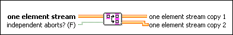

Requires: Base Development System
Splits a One Element Stream channel into two One Element channels so that each of the readers of the channels receives a separate copy of the data written into the original channel.
You can drop this endpoint on the block diagram by right-clicking a One Element Stream channel and selecting Insert»Replicate.
